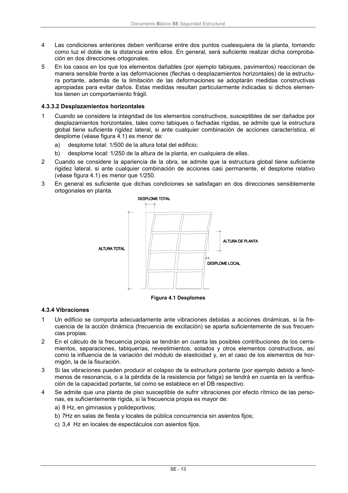

DB-SE Seguridad estructural · edición 2019-12-20 · capa oficial
Documento DB-SE-oficial · SHA-256 del PDF ec1fbfc51b28c4d62667aec480585b76fe31727ccf1615015a5d2d2677763f8f
Copia fiel del PDF fuente · Fuente oficial
Ficha de la disposición en la fuente oficial
Formatos: JSON del segmento · Markdown
4.3.3 Deformaciones 4.3.3.1 Flechas 4.3.3.1 Flechas 1 Cuando se considere la integridad de los elementos constructivos, se admite que la estructura hori- zontal de un piso o cubierta es suficientemente rígida si, para cualquiera de sus piezas, ante cual- quier combinación de acciones característica, considerando sólo las deformaciones que se produ- cen después de la puesta en obra del elemento, la flecha relativa es menor que: a) 1/500 en pisos con tabiques frágiles (como los de gran formato, rasillones, o placas) o pavi- mentos rígidos sin juntas; b) 1/400 en pisos con tabiques ordinarios o pavimentos rígidos con juntas; c) 1/300 en el resto de los casos. 2 Cuando se considere el confort de los usuarios, se admite que la estructura horizontal de un piso o cubierta es suficientemente rígida si, para cualquiera de sus piezas, ante cualquier combinación de acciones característica, considerando solamente las acciones de corta duración, la flecha relativa, es menor que 1/350. 3 Cuando se considere la apariencia de la obra, se admite que la estructura horizontal de un piso o cubierta es suficientemente rígida si, para cualquiera de sus piezas, ante cualquier combinación de acciones casi permanente, la flecha relativa es menor que 1/300. Documento Básico SE Seguridad Estructural SE - 13 4 Las condiciones anteriores deben verificarse entre dos puntos cualesquiera de la planta, tomando como luz el doble de la distancia entre ellos. En general, será suficiente realizar dicha comproba- ción en dos direcciones ortogonales. 5 En los casos en los que los elementos dañables (por ejemplo tabiques, pavimentos) reaccionan de manera sensible frente a las deformaciones (flechas o desplazamientos horizontales) de la estructu- ra portante, además de la limitación de las deformaciones se adoptarán medidas constructivas apropiadas para evitar daños. Estas medidas resultan particularmente indicadas si dichos elemen- tos tienen un comportamiento frágil.
